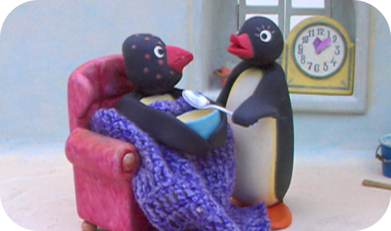

The PINGU and his family are sitting down to a meal and there is seaweed for lunch - not PINGU’s favourite. Then PINGU has an idea how to avoid having to swallow the stuff.
Episode 2
Pingu Helps With Incubating
A new little penguin is on its way, and all members of the family are helping with incubation. While his parents are away, PINGU is entrusted with this important task. But he finds sitting still difficult, and everything almost goes wrong.
Episode 3
Pinga Is Born
The egg, which has been lovingly incubated by all the members of the family, now starts to crack. Pinga is about to be born. There are a few nervous moments before the new addition to the penguin family gets to see the light and PINGU feels that he is being a bit left out.
Episode 4
Pingu Goes Fishing
PINGU sets off to go fishing at his two ice holes. He is soon doing well and, as he catches them, puts the freshly caught fish in a pile behind him. But, when he turns round his fish are gone! Robby the seal ensures that PINGU catches the same fish every time and eats the bait while he is at it. PINGU can not work it out but once he lures Robby out of the water he meets the trickster and is able to see the funny side of the situation. A firm friendship is formed.
Episode 5
Pingu Helps To Deliver Mail
PINGU’s father works at the post office. Today, PINGU is allowed to help him deliver the mail. In the process he learns what post means to different people and that the news can be happy and sad.
Episode 6
Pingu Is Jealous
Mother is busy with Pinga. PINGU watches and almost explodes with jealousy. He tries everything to get her attention. But will he succeed?
Episode 7
Pingu And The Snowball Fight
A real snowball fight is alright but before the battle goes to far, PINGU and Robby move on to a quieter game and have just as much fun.
Episode 8
Pinga Is Left Out
PINGU has arranged to meet his friend. His mother asks him to take care of his little sister Pinga. Whilst he and his friend play together, PINGU tells Pinga to stay where she is. When they discover Pinga is missing PINGU and his friend look everywhere for her until they have to admit to Mother what has happened, only to find that Pinga has made her own way home.
Episode 9
Pingu Plays Fish Tennis
PINGU and Robby find themselves with an enormous fish but are not at all hungry. They start to play with it and discover ‘fish tennis’. After a game and the retrieval of the fish, when is gets stuck on the line, they have worked up an appetite again and can enjoy eating the fish.
Episode 10
Pingu And The Avalanche Incident
PINGU and his friend are enjoying themselves tobogganing. Their runs become wilder and faster, and the two fail to notice that snow is sliding off a snowdrift as they pass. Luckily, when the snow falls on PINGU Robby goes to get help and a disaster is averted.
Episode 11
Pingu Plays Ice Hockey
PINGU and his friends agree to a hockey match with Snow Dog Hugo and his team. However when the game becomes increasingly ferocious, PINGU and his friends get fed up with the competitive atmosphere. Instead everyone ends up showing what they can do in a peaceful skating exhibition.
Episode 12
Pingu And Pinga Don't Want To Go To Bed
The two penguin children try everything in order not to have to go to bed. First they need to go to the loo again, then they’re thirsty, then they have to have the light on, and then the door has to be left just a little bit ajar. Their mother is worn out, and falls asleep on the chair and when they see this the children realise what they have done help their mother to bed.
Episode 13
Pingu On Makeshift Skis
PINGU is admiring a penguin friend's fantastic new skis. He is even allowed to stand on the back of them and ski along with him. However as they go he spots a broken barrel and has an idea. He soon has a pair of home-made skis and they set off again. But when they start showing off it all ends up in a heap of broken skis both old and new.
Episode 14
Pingu Runs Away From Home
PINGU is in a terrible mood and is behaving accordingly. It is the last straw when he tips up his chair taking the tablecloth with him as he falls. PINGU is sent outside while his parents clear up the chaos. As he wanders in the growing dark PINGU begins to see faces in the all the snowdrifts and is very relieved when his father comes out to find him and takes him home.
Episode 15
Pingu Builds An Igloo
PINGU and his friend decide to build an igloo. They search for a place to build the new igloo but cannot agree on the spot. They end up fighting over the ice blocks and decide to build their own igloos. However they soon realise that the only way to succeed is by working together.
Episode 16
Pingu Has Music Lessons
PINGU pulls an accordion out of the toy chest and is ‘playing’ away enthusiastically but the noise is so awful that his parents send him outside. When PINGU gets the same reaction from the other penguins he decides to go to see his grandfather who is an accomplished musician. PINGU learns quickly and astounds his family when he gets home.
Episode 17
Pingu In The Ice Cave
During a game of catch with a friend PINGU’s ball rolls out of sight. Whilst trying to retrieve it the two friends get trapped in an ice tunnel. Although at first despairing with a little ingenuity on PINGU’s part they manage to get out and back home.
Episode 18
Pingu's Tobogganing
PINGU and two friends meet for a toboggan race. They all race down the mountain but PINGU’s toboggan doesn’t seem to be working properly and he just can’t keep up. PINGU knows just what to do and makes a few adjustments. However, his new speedy descent lands him up inside a snowman, and he has to melt back out of it.
Episode 19
Pingu's Lavatory Story
PINGU has to rush to the loo because he has drunk too much. When he gets home however, his father is in the bathroom, and then when he does get in the toilet, it’s simply too high. PINGU has to clean up the mess he has made but then, with his father’s help he manages to overcome the problem with stairs round the loo.
Episode 20
Pingu At School
PINGU meets Robby on the way to school and Robby slips into the school ice-hole. During their lesson the class all have to dive into the ice-hole in order to find out what types of fish live beneath the ice. But PINGU ‘knows’ that not only fish live in the ocean and Robby catches all sorts of creatures for them to learn about.

Episode 21
Pingu's Grandfather Is Sick
Grandfather is sick! PINGU and Pinga set off with their mother right away. While mother is looking after grandfather, brother and sister play together, but their noise and nuisance soon means their mother sends them home. There, they paint their faces to look as if they too are ill and Mother comes rushing back only to discover their trick.
Episode 22
Pingu And Pinga Play Circus
PINGU, Pinga and Robby play at putting on a circus. Their performances meet with huge applause, even though not all of them go to plan, in fact the more they go wrong the funnier they seem to be.
Episode 23
Pingu And The Organ Grinder
PINGU feels sorry for the poor organ grinder. He puts some money in his hat and wants the adult penguins to do the same but they all look the other way. PINGU takes the poor man to his run-down igloo. Then he takes the barrel-organ and plays outside the baker’s, the fishmongers’, the tailor’s and in front of the drinks store. In turn each shopkeeper donates some goods. On his return PINGU is laden with food for the organ grinder and, while he eats, even patches up his igloo.
Episode 24
Pingu And His Friends Play Too Loudly
PINGU and his friends are playing ball. They are so excited that they do not notice how loud they are. The neighbours are annoyed at the noise the youngsters are making and keep chasing them away, but they refuse to let themselves be driven off so easily.
Episode 25
Pingu's Parents Go To A Concert
Father and mother would like to go and see a concert for a change. Their little ‘angels’ promise to be good but once Mother and Father are out of the way the story is very different. Soon the igloo looks as though a bomb has hit it. Although the two try their best to clear up the mess they cannot quite manage it and their behaviour is discovered.
Episode 26
Pingu Dreams
PINGU has fallen asleep during his bedtime story. He dreams the igloo roof is blown off and his bed begins to walk away. Half amused half frightened; PINGU rides through the landscape of the South Pole. Suddenly a huge walrus terrifies him and when he dreams he has fallen down a slope in an attempt to get away he is very relieved to find himself at home tangled up in his sheets.